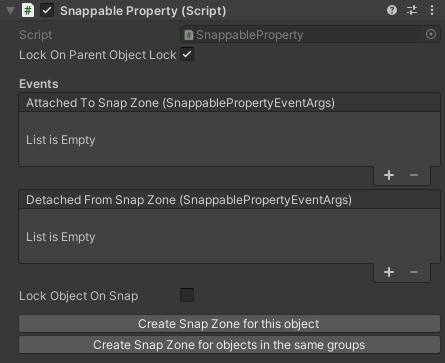

VR Builder Manual
Table of Contents
- VR Builder Manual
Behaviors
Behaviors are used to make something happen in the process. Behaviors can be as simple as giving instructions and hints, making new objects visible, or animating an object in the scene. What they have in common is that something happens without requiring an intervention by the user. This section lists the behaviors included in VR Builder.
Guidance
Utility
Behavior Sequence
Description
The Behavior Sequence contains a list of child behaviors which will be activated one after another. A child behavior in the list will not be activated until the previous child behavior has finished its life cycle.
Configuration
Repeat
If checked, the behavior sequence restarts from the top of the child behavior list as soon as the life cycle of the last child behavior in the list has finished.
Child behaviors
List of all queued behaviors. Add behaviors to the list using the "Add Behavior" button.
Wait for completion
If checked, the behavior sequence will finish the life cycle of each child behavior in the list before it transitions to another step. Even when the "Repeat" option is enabled, the execution will transition to the next step after the child behavior list has been completed. Uncheck this option if you want to interrupt the sequence as soon as all conditions of a transition are fulfilled.
Example
Play an audio file after a set time, for example to give the user some delayed hints.
This is a sequence combining a Delay and a Play Audio File behavior. Refer to the documentation for the Delay behavior and the Play Audio File behavior.
Delay
Description
The Delay behavior completes after the specified amount of time. This step will wait for the duration configured in Delay (in seconds), even when the user fulfills the required conditions to transition to the next step.
Configuration
Delay (in seconds)
Configure the behavior’s delay duration in seconds.
Example
Delay (in seconds) = 1.3
Set Parent
Description
The Set Parent behavior parents an Object to another one in the Unity hierarchy.
Configuration
Target
The
Process Scene Objectto be parented.Parent
The new parent for the target object. Note this can be null, in which case the object will be unparented.
Snap to parent transform
If checked, the target object will snap to the same position and rotation as the parent object.
Load Scene
Description
The Load Scene behavior loads a new scene, either additively or not. If a scene is loaded additively, it should not contain a VR Builder process as that could interfere with the process running in the main scene. It still can contain process scene objects which can be interacted with. If a scene is loaded non-additively, this behavior will effectively interrupt the process as the current scene is unloaded and a new one is loaded.
Configuration
Scene to load
Select the scene to be loaded from this dropdown. Note that the scene needs to be added to the Build Settings in order to show in the dropdown. The scene is serialized by path in the process JSON, so moving or renaming it might break this parameter.
Load additively
If checked, the scene will be loaded additively and the process will keep running. If unchecked, the current scene will be unloaded and thus interrupt the current process.
Load asynchronously
If checked, the scene will be loaded asynchronously. This can result in smoother performance while loading. A scene is loaded synchronously in the Start phase of the activating process, while asynchronous loading will happen in the Update phase.
Environment
Disable Objects
Description
The Disable Objects behavior makes the selected Objects invisible and non-interactive until they are specifically set back to "enabled" in a future step. Put into Unity terms, it deactivates the selected Game Objects.
Configuration
Objects
The
Process Scene Objectsto be disabled.
Enable Objects
Description
The Enable Objects behavior makes the selected Objects visible and interactive until it is specifically set back to "disabled" in a future step.
Put into Unity terms, it activates the selected Game Objects.
Configuration
Object
The
Process Scene Objectsto be enabled.
Disable Components
Description
The Disable Components behavior disables all components of the specified type on the given Process Scene Objects.
Configuration
Object
The
Process Scene Objectsthe component is on.Component type
A drop-down list allowing to select the component type that will be disabled.
Enable at end of step
If checked, the components will be enabled again at the end of the step.
Enable Components
Description
The Enable Components behavior enables all components of a specified type on the given Process Scene Objects.
Configuration
Object
The
Process Scene Objectsthe component is on.Component type
A drop-down list allowing to select the component type that will be enabled.
Disable at end of step
If checked, the components will be disabled again at the end of the step.
Unsnap Object
Description
The Unsnap Object behavior unsnaps a snapped object from a snap zone. This can be useful in case the object needs to be further manipulated by the process.
Configuration
Either the object or the snap zone can be left null. This will result in either the object unsnapping from any snap zone it is in, or in the unsnapping of whatever object is snapped to the specified snap zone.
If both are specified, the unsnap will occur only if the specified object is snapped to the specified snap zone.
Object to unsnap
The
Process Scene Objectto unsnap.Snap zone to unsnap
The
Snap Zonefrom which the object will be unsnapped.
Animation
Move Object
Description
The Move Object behavior animates the Object to move and rotate (no scaling) to the position and rotation of the Final Position Provider in the time specified in the Duration (in seconds) parameter.
Note: If Object was affected by gravity before, it will continue to be affected after this behavior.
Configuration
Object
The
Process Scene Objectto be moved and rotated (no scaling).Final position provider
The
Process Scene Objectused as the position provider object. It should be placed at the destination position and rotation.Animation duration (in seconds)
Time in seconds the animation takes to move and rotate
Objectto theFinal position provider.Example
Duration (in seconds) = 1.3
Conditions
Conditions are used to determine which transition is used to exit a step. Transitions are evaluated top to bottom, and the first valid one will be selected. To be valid means to have only fulfilled conditions or no conditions at all. A condition usually requires the user's intervention, for example grabbing an object. However this is not always the case: conditions like the timeout condition will trigger regardless of the user’s activity. There may also be cases in which other factors in the environment determine if a condition is fulfilled. Conditions need to be active in order to be fulfilled. As soon as a step is active, all containing Conditions are active as well. This section lists the conditions included in VR Builder.
Environment
Move Objects in Collider
Description
The Move Objects in Collider condition is fulfilled when the Objects are within the specified Collider for the required amount of time (Required seconds inside) while this condition is active.
Configuration
Object
The
Process Scene Objectsto move. If the objects need to be grabbed, they need to have theGrabbable Propertyand a collider component configured. The collider defines the area where the user can grab an object.Collider
The
Process Scene Objectwith the destination collider. Make sure that a collider is present and that the optionIs Triggeris enabled.Required seconds inside
Set the time in seconds that the
Objectsshould stay inside theCollider.
Object Nearby
Description
The Object Nearby condition is fulfilled when the Object is within the specified Range of a Reference object.
Configuration
Object
The
Process Scene Objectthat should be in the radius of theReference Object.Reference Object
The
Process Scene Objectfrom which you want to measure the distance.Range
In this field, you can set the maximum distance between the Object and the Reference object required to fulfill this condition.
Required seconds inside
In this field, you can set the time in seconds the
Objectshould stay within the radiusRangeof theReference Object.
Interaction
Grab Objects
Description
The Grab Object condition is fulfilled when the user grabs any of the Objects.
The condition is also fulfilled if the user already grabbed any of Objects before the step was activated, that is, if the user is already holding the specified object.
Configuration
Objects
The
Process Scene Objectsto grab. The objects needs to have theGrabbable Propertyand a collider component configured. The collider defines the area where the user can grab an object.
Release Objects
Description
The Release Objects condition is fulfilled when all of the Objects are released by the user's controller. If the user is not already holding any of the specified objects in hand while this condition is active, it is fulfilled immediately.
Configuration
Objects
The
Process Scene Objectsto release. The objects need to have theGrabbable Propertyand a collider component configured.
Snap Objects
Description
The Snap Object condition is fulfilled when any of the Objects is released into the Zone to snap into, which means the collider of any of the Objects and collider of the Zone overlap. Adapt the collider size of the snap zone to increase or decrease the area where the user can release an Object. Increasing the collider size of the snap zone decreases the required snap precision and simplifies the user's interaction in VR.
After the user releases an Object, this is moved to the snap zone's SnapPoint. To adjust this position, change the position of the SnapPoint child object of the Zone to snap into object.
Snap Zone Generator
For any snappable object you can generate a snap zone that can snap this object and can be used as a
Zone to snap into. To do so, navigate to theSnappable Propertyin Unity's Inspector. You will see two buttons. Clicking on the buttonCreate Snap Zone for this object, you will create a snap zone that only accepts this exact object. Clicking onCreate Snap Zone for objects in the same groupswill instead create a snap zone that accepts every object that shares at least a group with the current object. Note that the current object will still determine the shape of the snap zone's ghost object.
If you want a specific snap zone behavior, like for example accepting only one group of the source object instead of all of them, you'll have to manually change that. Select the snap zone and find the
Has Guid Validationcomponent. If you manually created your snap zone, you might have to add this component manually as well. Add to the list the objects you want to be valid for this snap zone. You can reference single objects by object ID, or entire categories of objects via groups.
Manual Snap Zone Creation
Instead of the automatic generation as described above, you can do those steps also manually. Please refer to available documentation on the
XRSocketInteractorfrom Unity or related sources. You can also make changes to the automatically created snap zone to adapt it to your needs. Please note that these changes might impact the process logic.Feed Forward for Snap Zones
Snap zones are restricted to which objects can be snapped. This means every object can be valid (i.e. it can be snapped to this zone) or invalid (it can not be snapped to this zone) for a snap zone. This is achieved with validation components on the snap zone, for example the
Has Guid Validationcomponent. You can use this component to configure which specific objects or groups are accepted by the snap zone. In case you are moving a valid object into a zone, the snap zone color changes to ‘Validation Color’ (green), providing the user in VR with positive feedback. In case you are moving an invalid object into a zone, the snap zone color changes to ‘Invalid Color’ (red), giving the user the feedback that this is the wrong object for this zone. You can modify the colors and materials to be used in the Snap Zones parameters and settings.Snap Zone Parameters and Settings
To change the highlight color or validation hover material of a dedicated snap zone, navigate to the snap zone object in the Unity Inspector. You will find the Snap Zone Parameters and Settings in the script
Snap Zone.
To change the colors and materials of all snap zones in the scene, select them in the VR Builder snap zone settings and press 'Apply settings in current scene'.

The snap zone settings can be found in the project settings in tab
VR Builder > Settings > Snap Zones.
Configuration
Objects
The
Process Scene Objectsto place (snap). The objects needs to have theSnappable Propertyand a collider component configured.Zone to snap into
This field contains the
Process Scene Objectwhere any of theObjectsare required to be snapped. Make sure the object has a collider component with theIs Triggerproperty enabled.
Touch Objects
Description
The Touch Object condition is fulfilled when any of the Objects is touched by the user's controller. If a user is already touching the any of the objects while this condition is active, this condition is fulfilled immediately.
Configuration
Object
The
Process Scene Objectsto be touched. The objects needs to have theTouchable Propertyand a collider component configured.
Use Objects
Description
The Use Objects condition is fulfilled when any of the Objects are used by pressing the Use button of the controller while being touched or grabbed.
Configuration
Objects
The
Process Scene Objectsof which one is required to be used. TheObjectsneed to have theUsable Propertyand a collider component configured.
Utility
Timeout
Description
The Timeout condition is fulfilled when the time specified in Wait (in seconds) has elapsed. This can make sense as a "fallback" condition. For example, if the user does not complete condition X in the allotted amount of time, the timeout condition will trigger leading to a different step with different consequences.
Configuration
Wait (in seconds)
Set the time in seconds that should elapse before this condition is fulfilled.
Locomotion
Teleport
Description
The Teleport condition is fulfilled when the user teleports to any of the referenced Teleportation Points. Previous teleportation actions made into a Teleportation Point are not considered.
If an anchor used as Teleportation Point has proximity detection enabled, the condition will be fulfilled not only if the user teleports to it, but also if they move close to it with continuous movement or by walking in the room. You can activate proximity detection when you need the user to be in a specific location, regardless of whether they teleport or arrive there by other locomotion types.
The provided Teleportation Property is based on the Unity XR Interaction Toolkit's Teleportation Anchor. For further reference, please check out the XR Interaction Toolkit documentation.
Configuring a Teleportation Point
The
Teleportation Propertycan be set as a Default Teleportation Anchor by clicking on theSet Default Teleportation Anchorbutton. You can find it when selecting theTeleportation Pointand viewing it in the Unity Inspector.
This will configure the attached
Teleportation Anchor. It will provide a visual element in the Unity Editor that helps placing theTeleportation Pointin the scene. This visual element will also be shown in the virtual world during training execution to guide the user.
Configuration
Teleportation Points
The
Teleportation Propertiesof which one, the user should teleport to.
Online Documentation
We offer a constantly expanding list of guides and tutorials on our website. We encourage you to check them out to improve your VR Builder skills.
If this is your first time with VR Builder, you should start from the Process Editor and Step Inspector tutorials, which explain the basics of working with VR Builder.
In addition,you might also want to check out the guides on how to build standalone VR Builder apps on the Oculus Quest or Pico Neo 3.
You can also check out some guides on the more advanced interactions, like the series on snap zones.
Lastly, there are some step-by-step tutorials explaining how to work with our latest paid add-ons. Even if you don't intend to buy the relevant content, they can provide a good overview on how to build a functional process with VR Builder from scratch.
Acknowledgements
VR Builder is based on the open source edition of the Innoactive Creator. While Innoactive helps enterprises to scale VR training, we adopted this tool to provide value for smaller content creators looking to streamline their VR development processes.
Like Innoactive, we believe in the value of open source and will continue to support this approach together with them and the open source community. This means you are welcome to contribute to the VR Builder GitHub repositories.
Contact and Support
Join our official Discord server for quick support from the developer and fellow users. Suggest and vote on new ideas to influence the future of the VR Builder.
Make sure to review VR Builder on the Unity Asset Store if you like it. This will help us sustain the development of VR Builder.
If you have any issues, please contact contact@mindport.co. We'd love to get your feedback, both positive and constructive. By sharing your feedback you help us improve - thank you in advance! Let's build something extraordinary!
You can also visit our website at mindport.co.